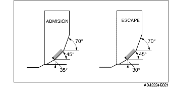

CONTROL/REPARACION ASIENTO DE VALVULA
B3E011010280E01
1. Medir la amplitud de contacto de la cara de la válvula y del asiento de válvula un compuesto (minio) para pulimiento de valvulas.
-
• Si no está conforme a lo especificado, rectificar el asiento de válvula mediante una fresa de 45° y/o rectificar la cara de la válvula.

-
Longitud de contacto estándar del asiento de válvula
-
0,8-1,4 mm (0,032-0,055 in)
2. Controlar que la cara de la válvula se posicione en el centro del asiento de la válvula.
-
• Si la posición es demasiado alta, corregir el asiento de válvula mediante una fresa de 70° (ADMISION) o 70° (ESCAPE) y una fresa de 45°.
-
• Si la posición es demasiado baja, corregir el asiento de válvula mediante una fresa de 35° (ADMISION) o 30° (ESCAPE) y una fresa de 45°.
3. Controlar por si hay hundimiento del asiento de válvula. Medir la longitud saliente (dimensión L) del vástago de válvula utilizando una válvula de longitud estándar.
-
• Si excede el valor especificado, sustituir la culata.
-
Hundimiento estándar del asiento de válvula
-
39,29 mm (1,5468 in)